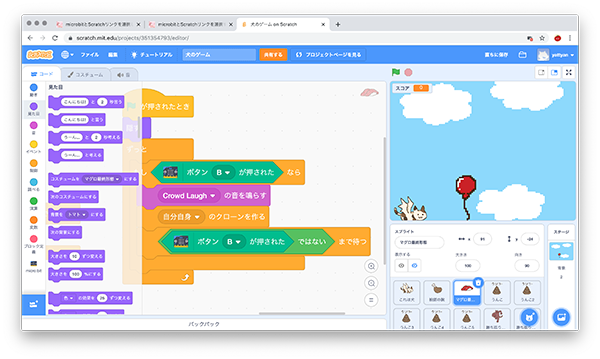
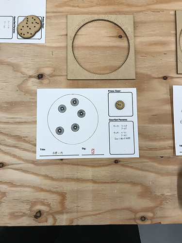

SwNwII学習進捗+α
⑴micro:bitでミニゲームを作る
micro:bitでミニゲームをつくり遊んでみた。参考にさせて頂いたサイトはこちら。
あとはArduinoを触りLEDを光らせるように設定した。
⑵scratch・p5jsを触ってみる
scratchでミニゲームを作成。うんこを踏んでいくだけのゲーム。
⑶micro:bit × scratchでミニゲームを作る
micro:bitとscratchを使い、ミニゲームを作成。犬を操作して飛んでくるうんこや猫を避けるゲーム。
矢印キー:移動 spaceキー:肉を投げる Zキー:寿司を投げる
おまけ クロステックデザイン演習
レーザーカッターで木材からスピログラフを作成し、実際に描いてみる
